|
データ分離器 |
|
信号 |
フロッピーディスクから読み出される信号は FM 方式の場合は 図1 、 MFM 方式の場合は 図2 のようになります。
| 図1: FM信号 |
|
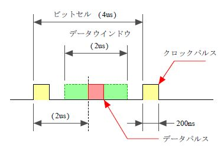 |
ビットデータはビットセルにあるデータパルスで表します。ビットセルの先頭にはクロックパルスを置きビットセルの真ん中のデータパルスの有無で ビット値を設定します。
MFM
方式は記録密度を高めるために
FM
方式と比べて同じデータでも周波数が半分程度になるように
クロックパルス
を減らした方式です。
FM
方式を基本として自分の
ビットセル
と前の
ビットセル
に
データパルス
がないときだけ
クロックパルス
を付けます。
| 図2: MFM信号 |
|
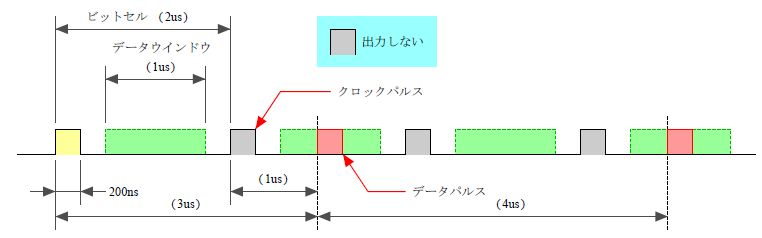 |
| 図3: FMビット列 a |
|
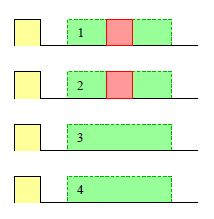 |
4ビットデータの
FM
方式の信号は
図3
のようになります。
パルスの状態は
図4
のようになります。
| 図4: FMビット列 b |
|
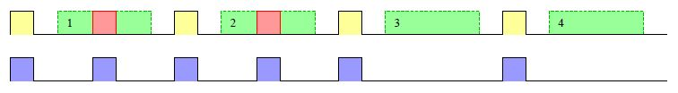 |
| 図5: MFMビット列 a |
|
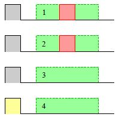 |
4ビットデータの
MFM
方式の信号は
図5
のようになります。
パルスの状態は
図6
のようになります。
| 図6: MFMビット列 b |
|
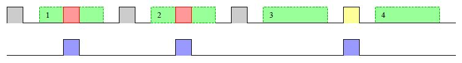 |
|
同期 |
ビットセル から ビットデータ を取り出すためには ビットセル の位置を確定させておく必要があります。 ディスクデータの読み取り装置が ビットセル の位置を特定していることが 同期 していることになります。
| 図7: ディスク |
|
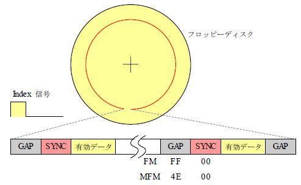 |
ディスクには有効データ以外のものが
図7
のように書き込まれています。
有効データの前には
SYNC
があります。
それ以外には
GAP
が書き込まれています。
SYNC
は
図8
のようにデータとしては
00
で
図9
のようにクロックパルスだけの列です、データ分離器はここでクロックパルスの位置からデータパルスが現れる範囲を特定することで同期を完了します。
|
SYNC |
SYNC のデータは 00 なのでFM方式でもMFM方式でも同じパルス列になります。
| 図8: SYNCデータ |
|
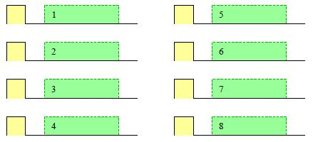 |
| 図9: SYNCパルス |
|
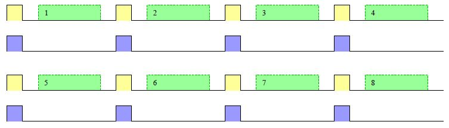 |
|
GAP |
GAP は 図10 のようにデータとしては FF で 図11 のような SYNC の2倍の周波数のパルス列です。 周波数の違いで SYNC と区別します。
| 図10: GAPデータ |
|
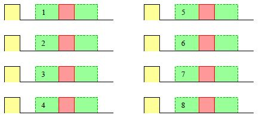 |
| 図11: GAPパルス |
|
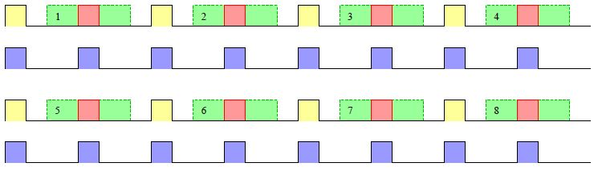 |
SYNC
に関しては
FM
方式も
MFM
方式もデータ
00
のパルス列を使用していますが
GAP
のデータは
FM
方式と
MFM
方式では異なるデータを使用しています。
なぜならば
図12
を見ると
FM
方式の
GAP
データと同じ
FF
を
MFM
方式で表すと
図13
のように
SYNC
と
GAP
は同じパルス列になってしまうので
FF
が使えないことが分かります。
| 図12: MFM方式のFFデータ |
|
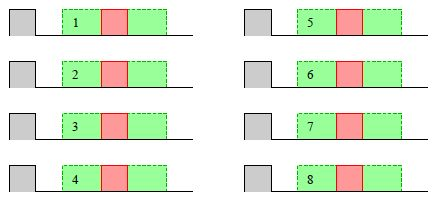 |
| 図13: MFM方式のFFパルス |
|
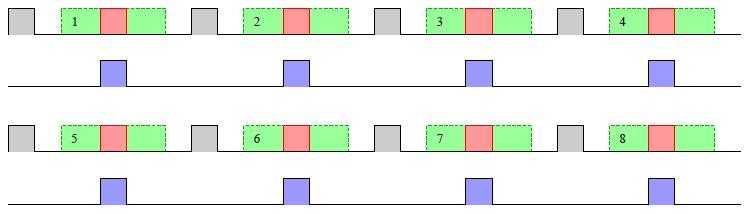 |
MFM 方式の GAP データは 図14 のように 4E を使用しています。 パルス列は 図15 のように周期の一定しないパルス間隔になっています。
| 図14: MFM方式のGAPデータ |
|
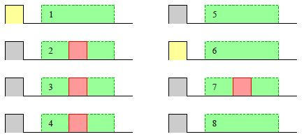 |
| 図15: MFM方式のGAPパルス |
|
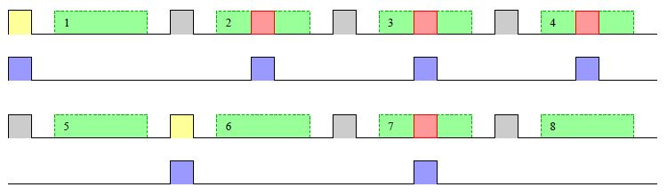 |
|
同期確立 |
GAP では同期確立しないこと SYNC の間に同期確立させます。
|
周期計数 |
フロッピーディスクから読み出される RDATA のパルスの時間の間隔を 16MHz のCLKで計数して ps に記憶します。
| 図16: 周期計数 |
|
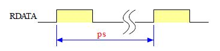 |
FM 方式では GAP に入っていると 32 個程度 SYNC に入っていると 64 個程度を計数します。
MFM 方式では GAP に入っていると 計数値が一定せず SYNC に入っていると 32 個程度を計数します。
|
データ窓 |
SYNC 中はクロックパルスだけなのでこの間にデータの取得範囲を特定できます。
| 図17: データ窓 |
|
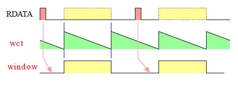 |
SYNC 中にクロックパルスが入ったら wct に ps の 1/4 を記憶させて window を 0 にすると 図17 のように window はデータのある位置を示すようになります。 wct が 0 になったときは ps の 半分 を記憶します。
|
同期検査 |
データ窓がクロックパルスとクロックパルスの間に固定すればデータ窓とクロックパルスが同期したことになります。
lockd
は
SYNC
中のクロックパルスとデータ窓との関係を表しています。
図18
の検査範囲のところにパルスが捕らえられなければ同期しているとして
8
になります。
検査範囲のところにパルスを捕らえると同期していないとして
3
になります。
| 図18: 同期検査 |
|
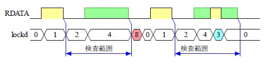 |
|
同期計数 |
SYNC
はFM方式で
6
バイト、MFM方式で
12
バイトです。
ビットではそれぞれ
48
と
96
です。
同期検査の
lockd
が
8
のとき同期しているものとみなして
lockct
で計数します。
本論理では
16
まで計数したら同期確立とみなして
lock
を
1
にします。
そして初期化あるいは再同期まで維持します。
|
微調整 |
SYNC 中に同期確立した後はデータ窓の WINDOW の制御は微調整制御に切り替えます。
|
偏差検出 |
RDATA のパルスがデータ窓の WINDOW のデータ範囲かクロック範囲の中心で捕らえるのが理想的な位置です、 この位置からの偏差を 図19 のように計測して微調整に使います。
| 図19: 偏差検出 |
|
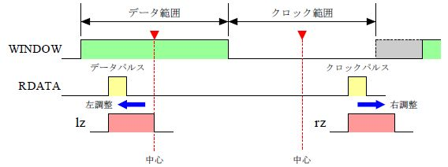 |
|
偏差調整 |
同期確立後の wct の設定値は ss で行います。 データ窓の中心からパルスが左にある場合はデータ窓を短くします。 右にある場合はデータ窓を長くします。
| 図20: 偏差調整 |
|
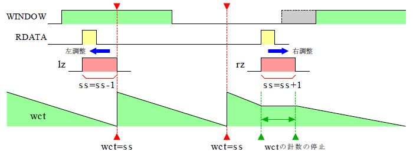 |
|
調整値作成 |
左調整範囲でパルスが入ってから sseq が 1 になるまでを lz を 1 にします。
右調整範囲に入ると rzc で増計数を行いパルスが入ったら減計数に転じます。 減計数の間を rz を 1 にします。
| 図21: 調整値作成 |
|
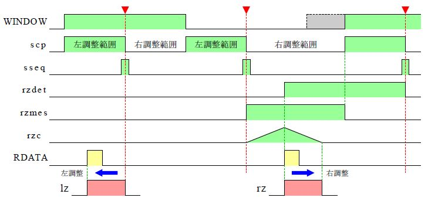 |